sakthi@github ~ $ whoami
Hey, I’m Sakthivel P
AI Infrastructure · Distributed Systems · Backend Engineering
I build dependable systems for distributed workloads, developer platforms, and AI infrastructure. I care about clear signals, resilient architecture, and software that keeps working when things fail.

Selected work
Systems built to handle real-world constraints.
Viper
Raft-backed distributed key-value store with linearizable reads and WAL recovery.
Go · Distributed systems CRDT rate limiterPartition-tolerant rate limiting with G-Counters, delta gossip, SWIM, and gRPC.
Go · CRDT TrustChainContinuous zero-trust authentication with policy controls, mTLS, replay protection, and trust scoring.
Security · GoCAUSA
Observability-driven Kubernetes root-cause analysis using metrics, logs, traces, and influence graphs.
Kubernetes · ObservabilityEngineering focus
- distributed systems
- Raft · CRDTs · Gossip · SWIM · gRPC
- backend platforms
- Go · Python · TypeScript · Java · SQL
- AI infrastructure
- LangGraph · RAG · Temporal · MCP
- observability
- Prometheus · Loki · Tempo · Kubernetes
- data systems
- PostgreSQL · Redis · Qdrant · FAISS
Contribution activity
